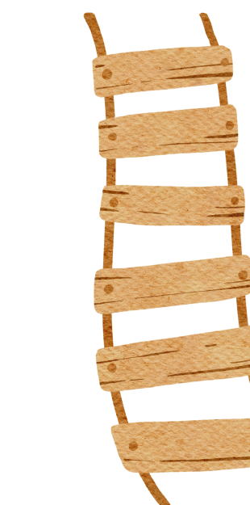

<div class="flex items-center justify-center h-screen py-20 sm:h-screen micro-parent">
  
  <div class="flex flex-col items-center justify-center w-4/5 gap-6 xl:w-2/3 lg:gap-12 sm:px-4 lg:px-8">
    <h1 class="text-xl font-semibold text-center text-white lg:text-3xl xl:text-4xl sm:text-2xl md:text-3xl sm:font-light ">
      Micro-Improvement Repository
    </h1>
    <p class="text-xs leading-relaxed text-center text-white lg:text-xl xl:text-xl xl:tracking-wider xl:leading-relaxed md:text-lg lg:font-light">
      Let’s consider improvements as a journey from Point A to B towards
      achieving a larger goal. The micro-improvement approach helps break down
      this journey towards a larger goal into a series of steps. Each of these
      steps represents one micro-improvement that has its own objective, is
      short, easy to accomplish and the change (success) is visible. The
      frequent wins experienced after every action in the process eventually
      feed into a  continuous cycle of improvement, making the improvement
      journey simple and doable.
    </p>
    <!-- <button class="explore-btn">Explore</button> -->

    <a [routerLink]="'/micro-improvement'" class="text-xs lg:text-xl xl:text-xl explore-btn">
      Explore
    </a>
  </div>
</div>